Prebenjamín
Primeros toques, juego y compañerismo. Aquí se aprende a querer el balón.
6 – 7 años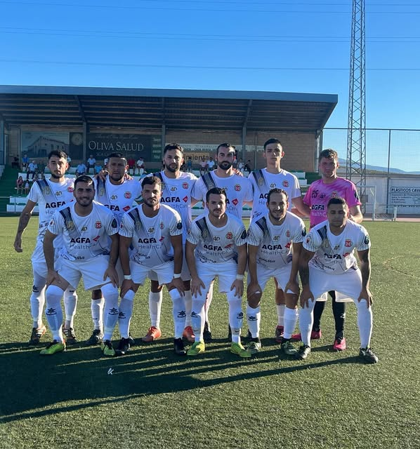
Más de 80 años de fútbol en Villargordo. Una escuela donde los peques dan sus primeros toques y un primer equipo que defiende el escudo cada domingo.
Cada categoría entrena en el Juan Antonio Cañas, con césped nuevo, iluminación renovada y espacios de gimnasio y fisioterapia estrenados en 2026.
Primeros toques, juego y compañerismo. Aquí se aprende a querer el balón.
6 – 7 añosFútbol 7 y fundamentos técnicos: pase, control, conducción.
8 – 9 añosFútbol 7 en liga provincial. Primeras nociones de posición y táctica.
10 – 11 añosSalto al fútbol 11. Dos equipos (A y B) para que nadie se quede sin jugar.
14 – 15 añosLa antesala del primer equipo. Competición regional andaluza.
16 – 18 añosPrimer equipo en Segunda Andaluza Jaén, Grupo III, con Manuel Jiménez en el banquillo.
+18 años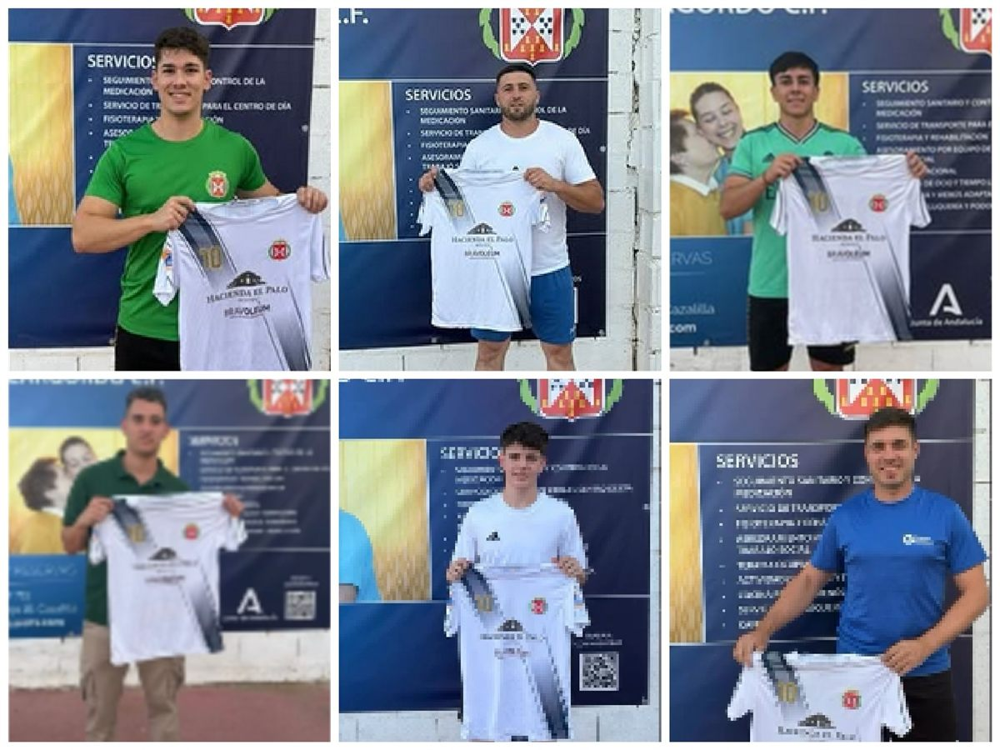
Escríbenos por Instagram y te contamos horarios, cuotas y equipación de cada categoría.
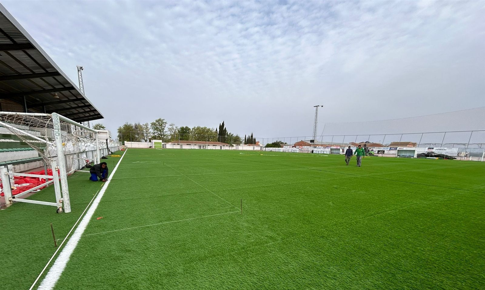
El Campo Municipal Juan Antonio Cañas Martos "Josthon" se ha renovado en 2026: césped, iluminación, gimnasio y sala de fisioterapia para todas las categorías.
Rivales del grupo: Atlético Mengíbar, Recreativo de Bailén, Baños CD 2022, Canena Atlético, CD Realeb, CD Rus EF, UD Guarromán, Ibros CF, CD Los Gachis y Lupión Atlético. El Villargordo descansa en las jornadas 10 y 21. Fechas y horarios sujetos a cambios de la Delegación de Jaén de la RFAF.
Las voces del club, de los veteranos a los que acaban de llegar. Grandes y pequeños tienen micro.
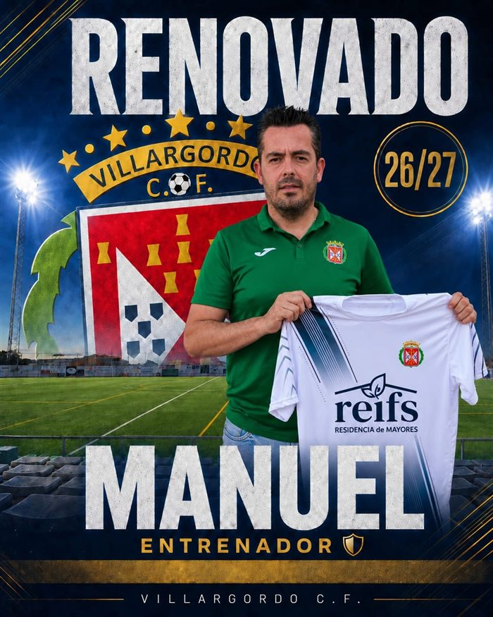
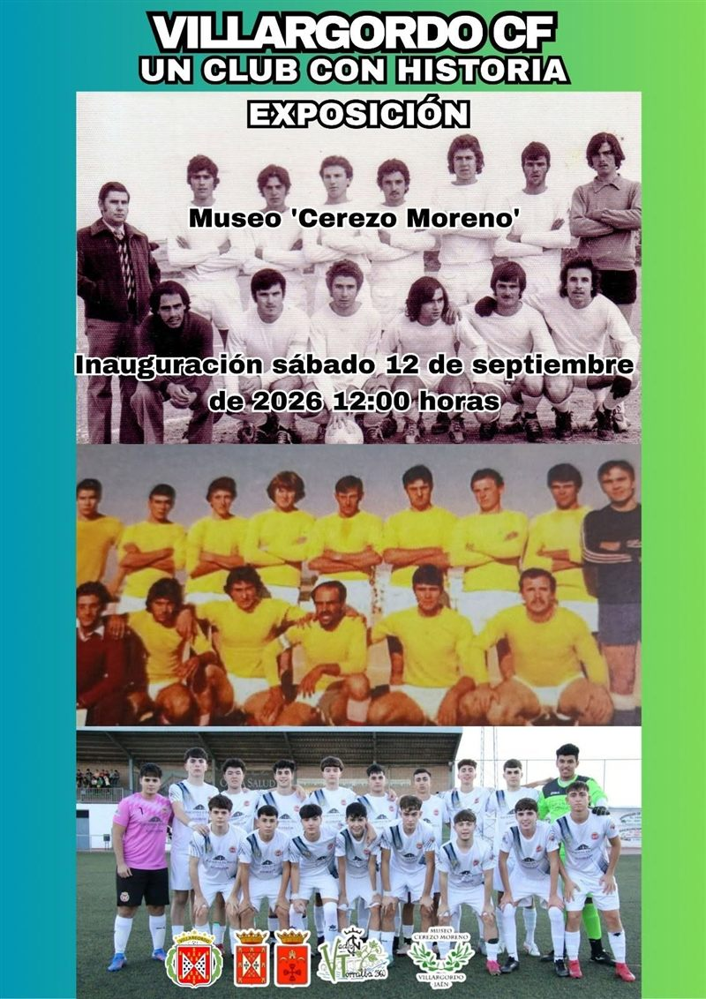
Las entrevistas a menores solo se publican con la autorización firmada de su madre, padre o tutor. Mostramos el nombre de pila y la categoría, nunca apellidos.
Cada equipo tiene su cromo de plantilla. Ábrelo y encontrarás el cromo de cada jugador y jugadora, como los de toda la vida.
▶ Los cromos con este sello hablan: púlsalos y el jugador se presenta en vídeo.Producto local y gente de la comarca. El grupo que se ganó el Trofeo Santiago 2026 ante el Campillo del Río (2-1).
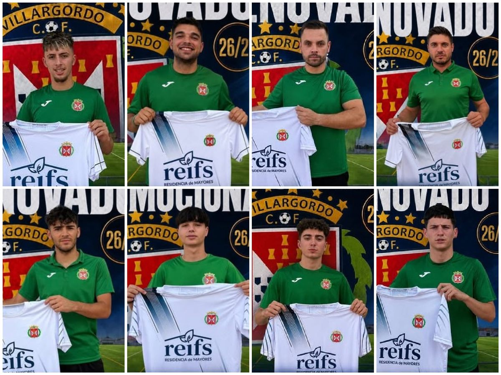
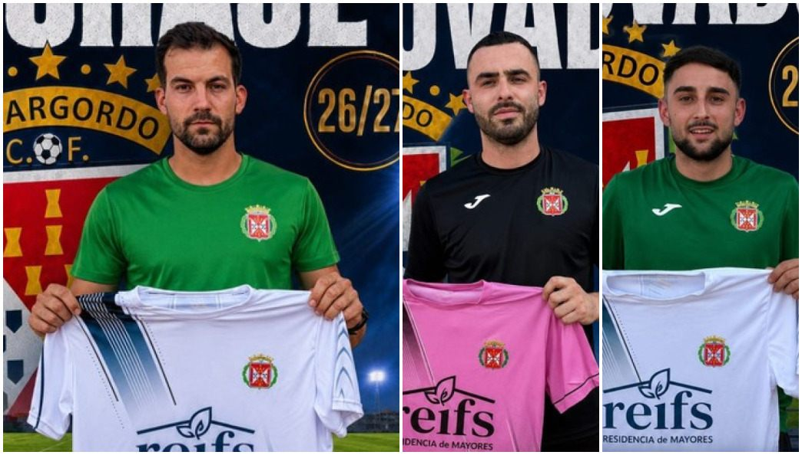
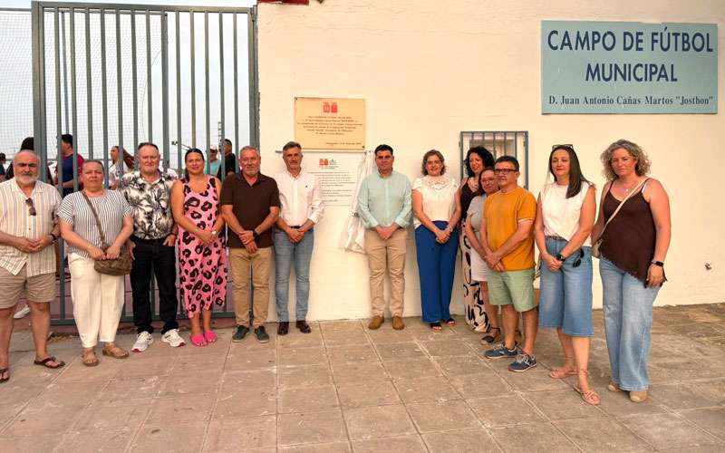
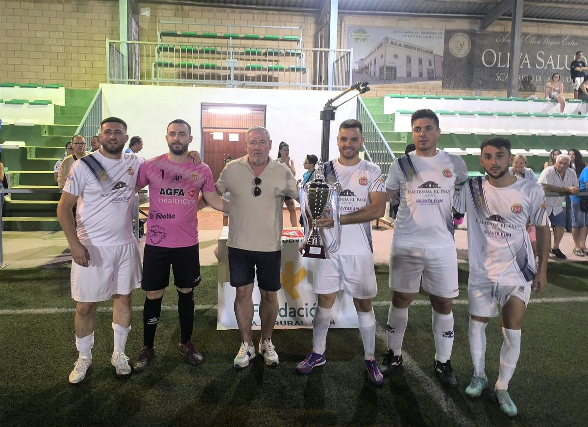
El escudo lo cuenta todo: el rojo y los castillos dorados, los escuditos azules y la corona de laurel. Una camiseta que generaciones de villargordeños han defendido en el mismo campo.
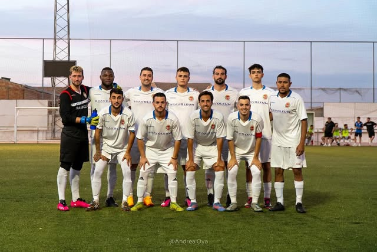
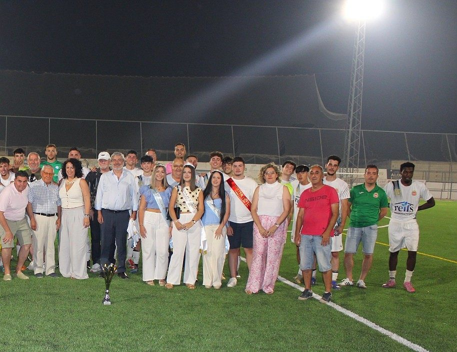
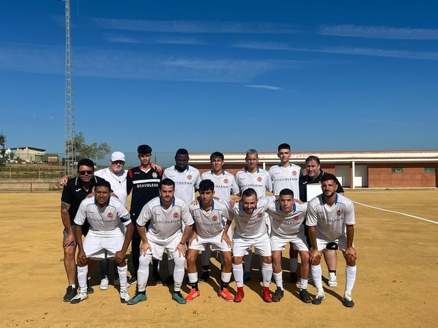
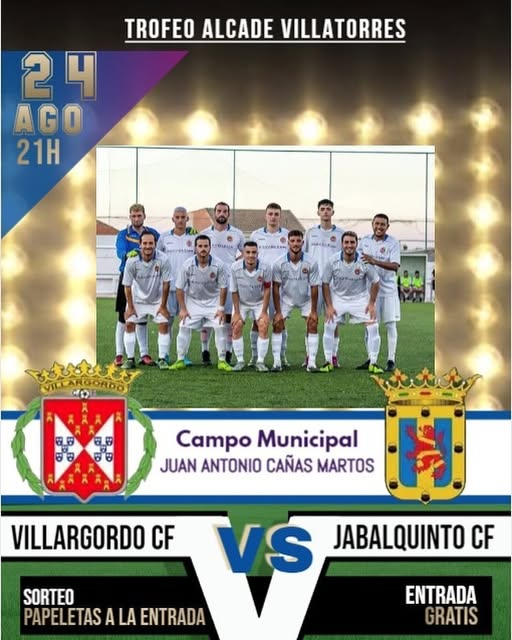
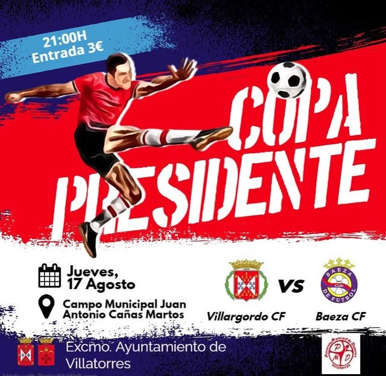
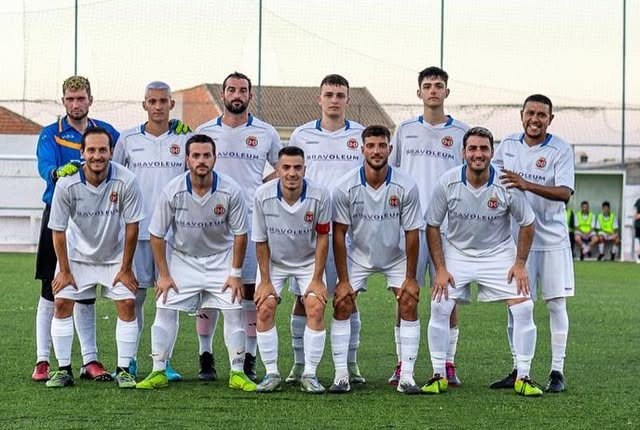
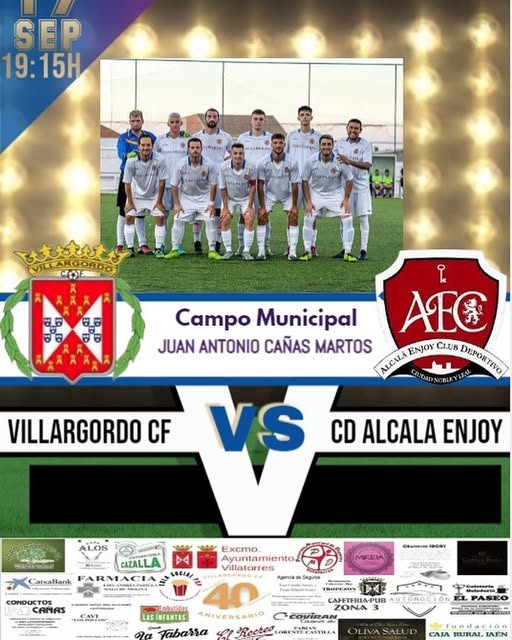
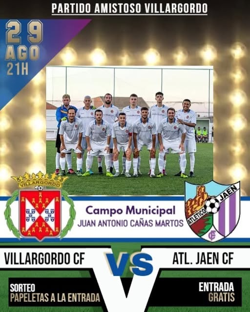
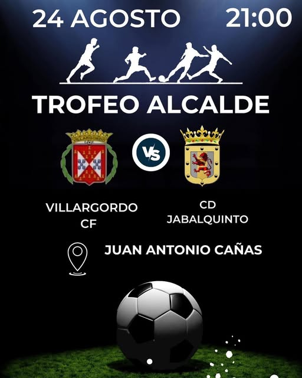
En Oleo Telecom queremos que los niños y niñas de Villargordo sigan creciendo con un balón en los pies. Telefonía, fibra y energía de la tierra, para la gente de la tierra.